지적기사 (2003-08-10 기출문제)
1과목: 지적측량
1. 평면 직각좌표(x,y)의 원점은 북위 38° 선상의 3개 지점이다. 이들의 원점 표시는?
- 1등 삼각점 표석
- 1등 또는 2등 삼각점 표석
- 원점고유 형태의 표석
- 표석은 없고 가상적인 위치
(정답률: 알수없음)

2. 산아래 A점에서 산정 B점까지의 경사거리가 1446.25m, 두점 AB간의 고도차 57.24m일 때 AB점 간의 수평거리는?
- 1652.12m
- 1450.25m
- 1445.12m
- 1315.35m
(정답률: 알수없음)
3. 다음 그림과 같이 가구에서 전체장 PA=PB(ℓ)의 값은? (단, θ = 82° 21′ 50″ , L = 5m 이다.)
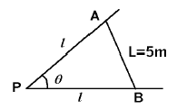
- 3.364m
- 3.797m
- 3.896m
- 3.988m
(정답률: 알수없음)
4. 점 P에서 점 A를 지나는 방위각 β 인 직선까지의 수선장 d를 산출하는 식은?
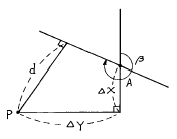
- d = △X cosβ - △Y sinβ
- d = △Y cosβ - △X sinβ
- d = △X sinβ - △Y cosβ
- d = △Y sinβ - △X cosβ
(정답률: 알수없음)
5. 지적삼각점의 선점시 고려하지 않아도 되는 것은?
- 삼각망은 정삼각형에 가깝도록 한다.
- 영구적으로 보존할 수 있는 곳에 설치토록 한다.
- 점간거리는 평균 2㎞ 내지 5㎞로 한다.
- 수평각은 3대회의 방향관측법에 의한다.
(정답률: 알수없음)
6. 지적삼각측량의 실시 순서로 가장 알맞은 것은?
- 계획-답사-조표-선점-관측
- 계획-조표-답사-선점-관측
- 계획-선점-답사-조표-관측
- 계획-답사-선점-조표-관측
(정답률: 알수없음)
7. 삼각점 측정시 0점에 기계를 세워서 관측하려 하였으나 점표 A가 장애물로 보이지 않아 부득이 점표를 AA′ 만큼 편심하여 측정하였더니 ∠A′ OB를 13° 12′ 26.7″ 를 얻었다. 실제 삼각점 ∠AOB의 수평각은? (단, AA′ = 2.34m, OA = 1234.56m이다.)
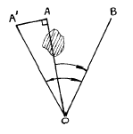
- 13° 02′ 26.7″
- 13° 08′ 57.7″
- 13° ⑤′ 55.7″
- 13° 02′ 57.7″
(정답률: 알수없음)
8. 구면삼각법을 평면삼각법으로 간주하여 계산하기 위하여 적용하는 정리는?
- 오일러(Euler) 정리
- 뫼스니에(Meusnier) 정리
- 가우스(Gauss) 정리
- 르장드르(Legendre) 정리
(정답률: 알수없음)
9. 다음 그림에서 P → B 방위각은? (단, A → B 방위각은 115° 25′ 20″ , α = 66° 17′ 12″ , γ = 56° 18′ 16″ )
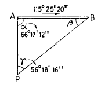
- 238° 00′ 48″
- 58° 00′ 48″
- 49° 08′ 08″
- 59° 07′ 04″
(정답률: 알수없음)
10. 지적도근측량을 다각망도선법에 의하여 시행할 경우에 대한 설명 중 옳은 것은?
- 3점 이상의 기지점을 상호 연결하는 방식에 의한다.
- 3점 이상의 기지점을 포함한 결합 다각망 방식에 의한다.
- 2점 이상의 기지점을 연결하는 다각망 도선법에 의한다.
- 2점 이상의 기지점을 상호 연결하는 방식에 의한다.
(정답률: 알수없음)
11. 지적삼각측량에서 광파기로 거리를 측정한 결과 평균거리 3325.45m이었다. 이 때의 거리측정 허용교차는?
- 0.06m
- 0.⑤m
- 0.04m
- 0.03m
(정답률: 알수없음)
12. 측판측량방법으로 세부측량을 하는 경우 임야도를 비치하는 지역에서의 거리측정단위는?
- 5㎝
- 20㎝
- 40㎝
- 50㎝
(정답률: 알수없음)
13. 종선 466,300m, 횡선 193,700m인 기초점이 들어가는 시가지 확정측량에서 축척 1/500 도면을 만들려고 한다. 이 때 도곽의 좌측하단을 정한 도곽선 수치는?
- x = 466,400, y = 193,800
- x = 466,250, y = 193,600
- x = 466,100, y = 193,600
- x = 466,250, y = 193,800
(정답률: 알수없음)
14. 경계점좌표등록부 시행지역의 지적도근점 측량성과와 검사성과의 연결교차 허용한계는?
- 0.⑤m 이내
- 0.10m 이내
- 0.15m 이내
- 0.20m 이내
(정답률: 알수없음)
15. 축척 1/1,000의 도면에서 단위면적이 실제 10m2일 때 축척 1/2,000의 도면에서의 단위면적의 실제 면적은?
- 5m2
- 20m2
- 40m2
- 60m2
(정답률: 알수없음)
16. 축척 1/1,000 인 지역을 측판측량방법으로 측량할 경우 도상에 영향을 미치지 않는 지상거리는?
- 10㎝
- 12㎝
- 15㎝
- 30㎝
(정답률: 알수없음)
17. 지적도근점의 각도관측에 있어서 폐색오차의 허용범위로 틀린 것은? (단, n은 폐색변을 포함한 변수임)
- 배각법에 의할 경우 1등도선 ±20√n 초
- 배각법에 의할 경우 2등도선 ±30√n 초
- 방위각법에 의할 경우 1등도선 ±√n 분
- 방위각법에 의할 경우 2등도선 ±2√n 분
(정답률: 알수없음)
18. 매매로 인하여 토지의 일부가 소유권이 이전되었다. 토지 이동을 위하여 실시되어야 할 측량으로 적당한 것은?
- 등록전환 측량
- 토지분할 측량
- 신규등록 측량
- 축척변경 측량
(정답률: 알수없음)
19. 표고 500m의 두 지점에서 측정한 3㎞의 거리를 평균 해면상의 거리로 환산할 경우 얼마가 줄어드는가? (단, 지구반경은 6,370㎞ 이다.)
- 0.24m
- 0.71m
- 0.47m
- 0.34m
(정답률: 알수없음)
20. 다각망도선법에 의한 지적도근측량시 1도선의 점의 수는 몇 점 이하로 제한되는가?
- 10점
- 20점
- 30점
- 40점
(정답률: 알수없음)
2과목: 응용측량
21. 어느 지역을 정지하고자 다음과 같은 방법으로 측량을 하였다. 절토와 성토량을 같게 하려면 높이는? (단, 단위는 m임)
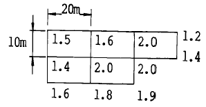
- 1.76m
- 1.86m
- 1.96m
- 2.00m
(정답률: 알수없음)
22. 우리나라 지형도 1/50,000 에서 조곡선의 간격은?
- 2.5m
- 5m
- 10m
- 20m
(정답률: 알수없음)
23. 다음 완화곡선 중 곡선체감곡선은?
- 클로소이드 곡선
- sin 체감곡선
- 렘니스케이트 곡선
- 3차 포물선
(정답률: 알수없음)
24. 그림과 같은 폐합수준측량을 한 결과 화살표 방향으로 표와 같은 고저차를 얻었다. 이 측량 중 정도가 가장 낮은 구간은?
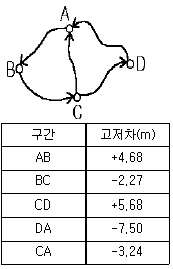
- AB구간
- AC구간
- AD구간
- BC구간
(정답률: 알수없음)
25. 원격탐사기법이 가지는 특징으로 틀린 것은?
- 짧은 시간에 넓은 지역을 동시에 측정할 수 있으며 반복측정이 주기적으로 가능하여 대상물의 변화를 감지할 수 있다.
- 다중파장대에 의한 지구표면의 다양한 정보의 취득이 용이하며 측정자료가 수치로 기록되어 판독에 있어서 자동적인 작업수행이 가능하고 정량화하기 쉽다.
- 관측이 넓은 시야각으로 행해지므로 얻어진 영상은 중심투영상에 가깝다.
- 탐사된 자료가 즉시 이용될 수 있으며 재해 및 환경 문제의 해결에 매우 유용하다.
(정답률: 알수없음)
26. 다음 그림에서 C점에서 A점 사이의 거리는? (단, ∠C=60°, ∠D=30°,
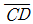
= 100m)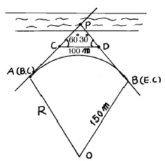
- 50.0m
- 86.6m
- 100.0m
- 115.3m
(정답률: 알수없음)
27. 지상사진과 일반항공사진을 비교하여 설명한 내용중 가장 관계가 먼 것은?
- 항공사진은 전방교선법, 지상사진은 후방교선법이다.
- 항공사진은 광각사진이 필요하나 지상사진은 보통각 사진이 좋다.
- 지상사진은 축척변경이 어렵다.
- 지상사진이 항공사진보다 높이의 정도는 좋다.
(정답률: 알수없음)
28. UTM좌표계는 위도방향으로 남북위 몇 도까지 투영하는가?
- 75°
- 80°
- 85°
- 90°
(정답률: 알수없음)
29. 수준측량에서 전· 후시의 측량을 연결하기 위하여 전시, 후시를 함께 취하는 점은?
- 중간점
- 수준점
- 이기점
- 기계점
(정답률: 알수없음)
30. 곡선시점 A에 트랜싯을 설치하고 편각법에 의하여 중심 말뚝을 설치하고자 한다. 곡선반경이 150m, 시단현의 길이가 15m이면 시단현에 의한 편각 δ 는?
- 2° 6'
- 2° 52'
- 3° 44'
- 5° 44'
(정답률: 알수없음)
31. 터널측량에 대한 설명 중 옳지 않은 것은?
- 터널측량은 크게 갱내측량, 갱외측량, 갱내외 연결측량으로 나누어진다.
- 갱내측량에서는 망원경의 십자선 및 표척에 조명이 필요하다.
- 터널의 길이방향은 주로 트래버스측량으로 행한다.
- 갱내의 곡선설치는 일반적으로 지상에서와 동일하다.
(정답률: 알수없음)
32. 2점법에 의하여 평균유속을 구하는 경우 수면으로부터 수심이 얼마인 곳의 유속을 측정해야 하는가?
- 수심 5/10, 6/10 되는 곳
- 수심 4/10, 6/10 되는 곳
- 수심 2/10, 8/10 되는 곳
- 수심 3/10, 7/10 되는 곳
(정답률: 알수없음)
33. 원곡선에 클로소이드를 접속시키기 위한 계산에는 다음 3개의 공정이 필요하다. 그 순서가 맞는 것은? (단, R : 원곡선의 곡률반경, A : 클로소이드의 파라메타, L : 곡선장)
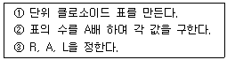
- ① - ② - ③
- ① - ③ - ②
- ③ - ② - ①
- ③ - ① - ②
(정답률: 알수없음)
34. 초점거리(f) 21㎝인 카메라로 촬영한 공중사진의 종중복도(p) 70%, 60%인 것과 초점거리 11㎝인 카메라로 촬영한 공중사진의 종중복도 75%, 60%인 4장의 사진 중 기선고도비가 가장 큰 것은 어느 것인가? (단, 사진크기는 18㎝ x 18㎝로 한다.)
- f = 21㎝, p = 70%
- f = 21㎝, p = 60%
- f = 11㎝, p = 75%
- f = 11㎝, p = 60%
(정답률: 알수없음)
35. 촬영고도가 3,500m, 사진Ⅰ의 주점기선길이 80㎜, 사진Ⅱ의 주점기선길이 84㎜일 때 시차차 1.5㎜인 그림자의 고저차는?
- 34m
- 44m
- 54m
- 64m
(정답률: 알수없음)
36. 동경 135° 25′ 33″ 인 지점과 동경 164° 18′ 48″ 인 지점간의 시간차는 얼마인가?
- 1시간 15분 12초
- 1시간 55분 33초
- 2시간 27분 54초
- 2시간 46분 25초
(정답률: 알수없음)
37. 사진측량에서 주점거리에 대한 설명으로 가장 올바른 것은?
- 렌즈의 중심에서 화면에 내린 수선을 말한다.
- 기준면으로부터 렌즈의 중심까지의 높이
- 임의의 사진의 주점과 다음 사진의 주점과의 거리
- 다음 촬영점까지의 실제거리
(정답률: 알수없음)
38. 경사진 갱의 고저차를 구하기 위하여 관측한 값이 다음과 같다. A.B의 고저차는 얼마인가? (단, 측점은 천정에 설치하였다. a = 1.50m, b = 1.20m, 연직각 α = 25° 30', 경사거리 s = 50m이다.)
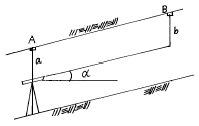
- 21.07m
- 21.23m
- 21.53m
- 21.67m
(정답률: 알수없음)
39. 지형의 능선과 계곡을 따라 등고선을 측량하는 방법으로 가장 효율적인 것은?
- 점고법
- 지형점법
- 방사법
- 지성선법
(정답률: 알수없음)
40. 단곡선에 있어서 교각 I = 30° , 반경 R = 200m, 곡선시점(B.C)까지의 추가거리가 120.85m 일 때 곡선종점(E.C)까지의 추가거리는 얼마인가?
- 180.29m
- 2⑤.57m
- 225.57m
- 236.28m
(정답률: 알수없음)
3과목: 토지정보체계론
41. 대가구(Super block)단위의 재개발 방식의 장점이 아닌것은?
- 토지확보가 용이하여 시행이 순조롭다.
- 좋은 도시경관을 만들 수 있다.
- 건물을 고층화할 수 있어 많은 녹지를 얻을 수 있고 토지이용도 효율적이 된다.
- 주차장, 위생시설등을 공동으로 할 수 있어 경제적이며, 합리적 처리를 할 수 있다.
(정답률: 알수없음)
42. 아래에서 설명하고 있는 구역제는?
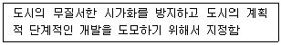
- 개발밀도관리구역
- 개발제한구역
- 수산자원보호구역
- 시가화조정구역
(정답률: 알수없음)
43. 도시기본계획의 원칙적인 입안자는 누구인가?
- 시장· 군수
- 건설교통부장관
- 국무총리
- 행정자치부장관
(정답률: 알수없음)
44. 우리나라의 토지이용 패턴의 특징이 아닌 것은
- 대규모의 토지를 전형적으로 이용
- 생산과 생활공간을 혼합적으로 이용
- 전근대적인 토지이용과 근대적인 토지이용으로 이중성
- 자연발생적으로 이용
(정답률: 알수없음)
45. 호이트의 선형이론에서 공간질서 형성에 가장 중요한 역할을 하는 지구는?
- 고급주택지구
- 경공업지구
- 도매지구
- CBD
(정답률: 알수없음)
46. 도시의 정의에 대한 일반적 내용이 아닌 것은?
- 영구적 주거지를 이루는 곳
- 많은 물자와 상품의 거래장소
- 동질성을 가진 집단
- 높은 인구밀도
(정답률: 알수없음)
47. 고대 그리이스의 도시가로 형태의 특징은?
- 불규칙형
- 환상방사형
- 지형형
- 격자형
(정답률: 알수없음)
48. 개발도상국에서 흔히 이용되는 재개발 수법은?
- 개량 재개발
- 보전 재개발
- 수복 재개발
- 철거 재개발
(정답률: 알수없음)
49. 도시관리계획에 있어서 목표설정은 가장 중요한 일이라고 할 수 있기 때문에 다음과 같은 원칙을 충분히 감안해서 설정되어야 한다. 그중 잘못된 원칙은?
- 도시의 자연적, 사회적, 경제적 특성을 최대한 반영시킨다.
- 시장, 군수가 입안하는 도시관리계획은 주민의견 수렴 과정을 생략할 수 있다.
- 너무 이상적이기 보다는 실현가능한 목표를 세워야 한다.
- 목표상호간에 모순이나 불균형이 있어서는 아니된다.
(정답률: 알수없음)
50. 다음 도시학자 중 인간정주사회의 단계를 인구규모를 기준으로 15단계로 구분하여 제시한 학자는?
- 독시아디스(C.A. Doxiadis)
- 멈포드(Mumford Lewis)
- 르 꼬르뷔제(Le Corbusier)
- 에베네저 하워드(Ebenezer Howard)
(정답률: 알수없음)
51. 근린주구 단위에 대한 설명 중 틀린 것은?
- 일상 생활에 필요한 편익 시설이 갖추어져 있어야한다.
- 교통의 편익을 위하여 간선도로가 주구내를 통과해야 한다.
- 용도순화를 위하여 공업용지는 고려하지 않는다.
- 초등학교의 학교구역과 일치되는 범역을 갖는 것이 좋다.
(정답률: 알수없음)
52. 도시계획 접근이론 중 과학적 접근방법을 비판하면서 인간적 요소를 중시하는 이론으로 가장 타당한 것은?
- 점증이론
- 적응이론
- 옹호이론
- 교환거래이론
(정답률: 알수없음)
53. 다음중 기반시설이 아닌 것은?
- 공동묘지
- 도서관
- 공공공지
- 수족관
(정답률: 알수없음)
54. 영국의 주택도시 Bath 계획에서 채택된 광장은 어느 것인가?
- 전정광장
- 시장광장
- 교통광장
- 근린광장
(정답률: 알수없음)
55. 시장 또는 군수는 도시관리계획 결정의 고시가 있은 때에 지적이 표시된 지형도에 도시관리계획사항을 명시한 도면을 작성하여야 하는데 이때 도면의 축척으로 옳은 것은?
- 1/300 - 1/600
- 1/500 - 1/1500
- 1/300 - 1/1200
- 1/1000 - 1/2000
(정답률: 알수없음)
56. 장래 인구 추계 방법으로 성별(性別), 연령별 인구구조를 알수 있는 방법은?
- 등비급수에 의한 것
- 등차급수에 의한 것
- 과거 인구 변화의 추세선을 연장하는 법
- 집단생잔법
(정답률: 알수없음)
57. 환지방식에 의한 도시개발사업의 특유(特有)한 재원(財源)확보 방법은?
- 국고보조
- 도비보조
- 자치단체보조
- 체비지(替費地)매각
(정답률: 알수없음)
58. 다음 중 생활환경지표의 해당분야가 아닌 것은?
- 복지환경
- 생활환경
- 위락환경
- 행정환경
(정답률: 알수없음)
59. 어떤 지역의 산업이 전국의 동일산업에 비하여 상대적으로 특화된 정도를 파악하는 방법으로 입지상을 파악하는 방법이 있다. 아래 같은 조건인 경우 A 도시의 제조업이 갖는 입지상을 구하면?
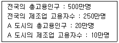
- 2.5
- 1.0
- 1.5
- 3.0
(정답률: 알수없음)
60. 도시계획지표 중 가장 기본이 되는 지표는?
- 경제지표
- 생활환경지표
- 인구지표
- 도시세력지표
(정답률: 알수없음)
4과목: 지적학
61. 지적공개주의를 설명한 것으로 옳은 것은?
- 지적공부의 등록사항은 토지이동이 있을 때 정기적으로 공개하여야 한다.
- 토지이동은 반드시 소관청에 신청하여야 한다.
- 지적공부의 등본발급은 소유자에 한한다.
- 지적공부의 열람은 어떠한 경우에도 거부할 수 없다.
(정답률: 알수없음)
62. 축척이 다른 도면에 동일한 토지의 경계가 각각 등록되어 있을 때 그 경계는 어느 축척을 따르는 것이 원칙인가?
- 대축척 경계에 따른다.
- 소축척 경계에 따른다.
- 평균하여 사용한다.
- 토지 소유자 의사에 따른다.
(정답률: 알수없음)
63. 토지의 지목이 가지고 있는 가장 큰 역할은?
- 토지계획
- 지가책정 기준
- 과세기준
- 사용 실상 표시
(정답률: 알수없음)
64. 징발된 토지의 소유권은 누구에게 있는가?
- 소관청
- 행정자치부장관
- 도지사
- 토지소유자
(정답률: 알수없음)
65. 소관청이 직권으로 지적공부에 등록된 사항을 정정할 수 있는 경우가 아닌 것은?
- 지적공부의 등록사항이 잘못 입력된 경우
- 지적공부의 작성 또는 재작성 당시 잘못 정리된 경우
- 측량성과와 다르게 정리된 경우
- 도면에 등록된 필지가 면적의 증감으로 경계의 위치가 잘못 등록된 경우
(정답률: 알수없음)
66. 다음 중 각국의 지적 대행제도의 연결이 옳은 것은?
- 일본은 국가직영체제이고 대만은 대행체제로 운영
- 프랑스는 국가직영체제이고 대만은 대행체제로 운영
- 스위스는 국가직영체제이고 네덜란드는 대행체제로 운영
- 네덜란드는 국가직영체제이고 한국은 대행체제로 운영
(정답률: 알수없음)
67. 지상측량에서 수치측량으로 얻은 데이터로 지적도를 제작하며 항공사진을 이용하여 해석사진 측량방법으로 얻은 좌표를 이용하는 지적은?
- 도해지적
- 다목적지적
- 법지적
- 수치지적
(정답률: 알수없음)
68. 영구적 건축물이 있는 실내체육관 부지의 지목은?
- 유원지
- 운동장
- 공원
- 체육용지
(정답률: 알수없음)
69. 지적과 등기제도의 특징을 연결하였다. 관계가 옳지 않은 것은?
- 토지의 물체적상황 - 지적
- 제한물권(制限物權)의 설정 - 등기
- 최초소유권의 등재 - 등기
- 토지의 물체적 동일성 - 지적
(정답률: 알수없음)
70. 지적공부 중 임야도를 비치하는 가장 큰 목적은?
- 산림경영
- 지적정리
- 임야개간
- 농토개발
(정답률: 알수없음)
71. 일반적으로 결번이 생겼을 경우 어떻게 처리하는 것이 옳은가?
- 결번이 없도록 한다.
- 결번된 토지 대장 카드를 없애 버린다.
- 결번된 지번을 삭제하고 다른 지번을 설정한다.
- 결번 그대로 둔다.
(정답률: 알수없음)
72. 조선시대의 속대전(續大典)에서 토지의 위치로서 동서남북의 경계를 표시하는 것을 무엇이라고 하는가?
- 자번호
- 사주(四柱)
- 사표(四標)
- 주명(主名)
(정답률: 알수없음)
73. 경계선의 위치가 가장 정확한 지적제도는?
- 세지적
- 법지적
- 유사지적
- 경제지적
(정답률: 알수없음)
74. 지적공부에 등록하기 위한 토지표시사항의 결정권한은?
- 국가공권
- 지방자치권
- 지적직 공무원직권
- 측량사 사권
(정답률: 알수없음)
75. 토지 분쟁이 있을 경우 법관이 요청한 경계 감정측량은 다음 중 어디에 속하는가?
- 법관에 대한 기속 측량
- 토지 현황 측량
- 경계 복원 측량
- 토지 등록 측량
(정답률: 알수없음)
76. 조선시대 내수사와 왕실의 일부 또는 왕실의 경비를 충당하기 위한 토지는?
- 역토
- 궁장토
- 둔토
- 마토
(정답률: 알수없음)
77. 지적공부에 등록하는 토지의 일정 사항을 국가가 결정하여 등록하는 가장 중요한 이유는?
- 소유권 보호 기여
- 지역 특징 고려
- 토지의 경제성 고려
- 손실보상
(정답률: 알수없음)
78. 다음 중 지적공부의 성격이 다른 것은?
- 을호토지대장
- 토지조사부
- 별책토지대장
- 산토지대장
(정답률: 알수없음)
79. 지적의 정의로 「지적은 특정한 국가나 지역 내에 있는 재산을 지적측량에 의해 체계적으로 정리해 놓은 공부다.」라고 정의한 학자는?
- S. R. Simpson
- J. G. M c Entre
- J. L. Henssen
- Cledat
(정답률: 알수없음)
80. 다음 중 주거표시를 위해 건물번호를 사용하는 나라는?
- 일본
- 한국
- 독일
- 대만
(정답률: 알수없음)
5과목: 지적관계법규
81. 토지의 투기억제 및 지가의 급격한 상승을 규제하기 위한 거래계약 허가구역은 몇 년이내의 기간을 정하여 지정할 수 있는가?
- 10년
- 5년
- 3년
- 1년
(정답률: 알수없음)
82. 민법상 지역권에 대한 설명으로 틀린 것은?
- 지역권은 요역지소유권에 부종하여 이전한다.
- 지역권은 요역지와 분리하여 양도하거나 다른 권리의 목적으로 하지 못한다.
- 토지공유자의 1인은 지분에 관하여 그 토지를 위한 지역권 또는 그 토지가 부담한 지역권을 소멸하게 하지 못한다.
- 토지의 분할이나 토지의 일부양도의 경우, 지역권은 요역지의 각 부분을 위하여 또는 그 승역지의 각 부분에 존속하지 않는다.
(정답률: 알수없음)
83. 건축법 상 건축물이 있는 대지를 분할하고자 할 때 용도 지역별 최소면적으로 옳은 것은?
- 주거지역- 60m2이상
- 공업지역-200m2이상
- 상업지역-250m2이상
- 녹지지역-150m2이상
(정답률: 알수없음)
84. 축척변경위원회의 구성인원으로 옳은 것은?
- 5인 이상 10인 이내
- 10인 이상 15인 이내
- 15인 이상 20인 이내
- 축척변경시행지역안의 토지소유자의 5분의 1
(정답률: 알수없음)
85. 소관청이 관할 등기소에 등기촉탁을 할 수 없는 것은?
- 행정구역개편에 의한 지번변경
- 등록사항 오류정정
- 축척변경
- 공유수면매립에 의한 신규등록
(정답률: 알수없음)
86. 소관청이 지번을 변경하고자 할 때에는 누구의 승인을 받아야 하는가?
- 행정자치부 장관
- 특별시장· 광역시장· 도지사
- 토지수용위원회 위원장
- 중앙지적위원회 위원장
(정답률: 알수없음)
87. 다음 중 임야도 축척으로 적합한 것은?
- 1/1200
- 1/2400
- 1/5000
- 1/6000
(정답률: 알수없음)
88. 지적공부에 관한 전산자료를 이용 또는 활용하기 위하여 승인을 하는 자 중에서 잘못된 것은?
- 전국단위의 자료 - 행정자치부장관
- 읍· 면단위의 자료 - 시·도지사
- 시· 도단위의 자료 - 시·도지사
- 시· 군· 구단위의 자료 - 소관청
(정답률: 알수없음)
89. 다음 중 승마장의 지목 구분으로 옳은 것은?
- 체육용지
- 잡종지
- 유원지
- 학교용지
(정답률: 알수없음)
90. 토지이동신청을 대위할 수 없는 자는?
- 전세권자
- 사업시행자
- 민법404조의 규정에 의한 채권자
- 지방자치단체의 장
(정답률: 알수없음)
91. 시· 도지사로부터 도시계획시설사업의 시행자로 지정받은 행정청이 아닌자에 대한 행정심판은 누구에게 제기하여야 하는가?
- 도시계획시설사업 시행자
- 관할 시·도지사
- 국무총리
- 행정자치부장관
(정답률: 알수없음)
92. 토지의 지목이 다르게 된 때에는 토지소유자는 대통령령이 정하는 바에 의하여 몇 일 이내에 소관청에 지목변경을 신청해야 하는가?
- 90일
- 60일
- 30일
- 15일
(정답률: 알수없음)
93. 현행 지적법에 규정된 벌칙규정 중 가장 무거운 벌을 받는 경우는?
- 지적측량 업무집행 방해
- 법에 규정된 사항의 허위신고
- 지적편집도의 간행 위반
- 지적측량 위반
(정답률: 알수없음)
94. 도시개발법 규정에 의한 환지계획에서 정하여야 할 사항이 아닌 것은?
- 환지설계
- 환지의 청산금
- 필별로된 환지명세
- 체비지 또는 보유지의 명세
(정답률: 알수없음)
95. 도시개발법상 도시개발구역의 개발계획에 포함되어야 할 사항이 아닌 것은?
- 재원조달계획
- 교통처리계획
- 환경보전계획
- 인구분산계획
(정답률: 알수없음)
96. 민법상 기간의 말일이 공휴일인 경우 기간의 만료일은 ?
- 전일
- 익일
- 말일
- 공휴일
(정답률: 알수없음)
97. 다음 중 등기관이 등기를 한 때에 소관청에 등기필의 통지를 하여야 할 사항이 아닌 것은?
- 소유권의 보존등기
- 임차권의 설정등기
- 소유권의 말소등기
- 등기명의인 표시의 변경등기
(정답률: 알수없음)
98. 소관청이 축척변경을 하고자 할 때에는 축척변경위원회의 의결을 거치기 전에 시행지역내 토지소유자 얼마이상의 동의를 얻어야 하는가?
- 3분의 1이상
- 4분의 1이상
- 3분의 2이상
- 4분의 3이상
(정답률: 알수없음)
99. 다음 중 지구단위계획의 내용에 포함되지 않는 것은?
- 일단의 토지규모와 조성계획
- 건축물의 용도제한 또는 최저한도
- 환경관리계획 또는 경관계획
- 인구 또는 산업기능 배분계획
(정답률: 알수없음)
100. 지적측량적부심사 청구인의 재심사청구에 의하여 지적위원회의 재심사를 거친 토지의 등록사항정정을 소관청이 시행할 경우 필요한 서류로만 되어 있는 것은?
- 지방지적위원회의 의결서 사본, 측량결과도
- 중앙지적위원회의 의결서 사본, 측량성과도
- 지방지적위원회 및 중앙지적위원회의 의결서 사본
- 중앙지적위원회의 의결서 사본, 측량결과도
(정답률: 알수없음)